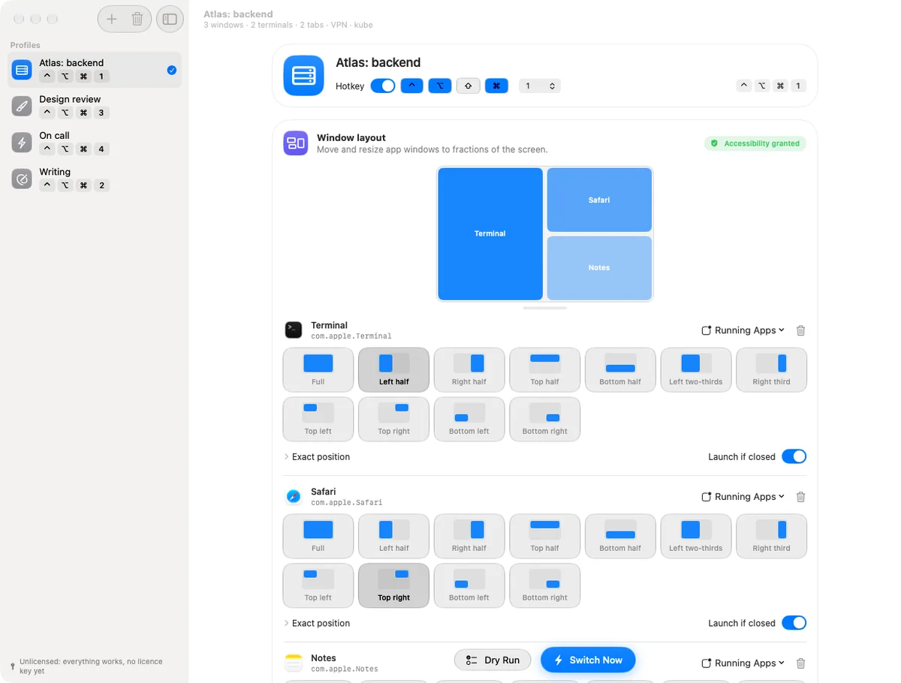
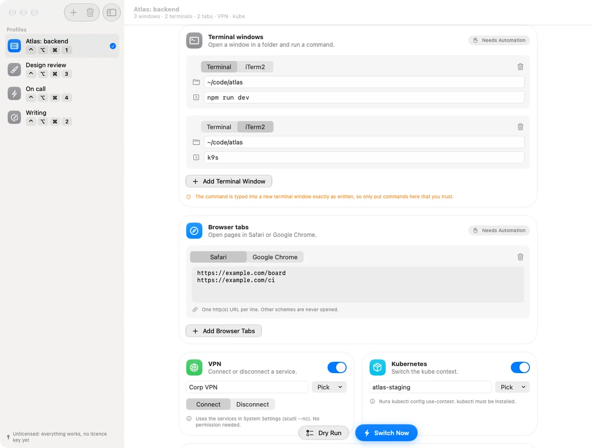
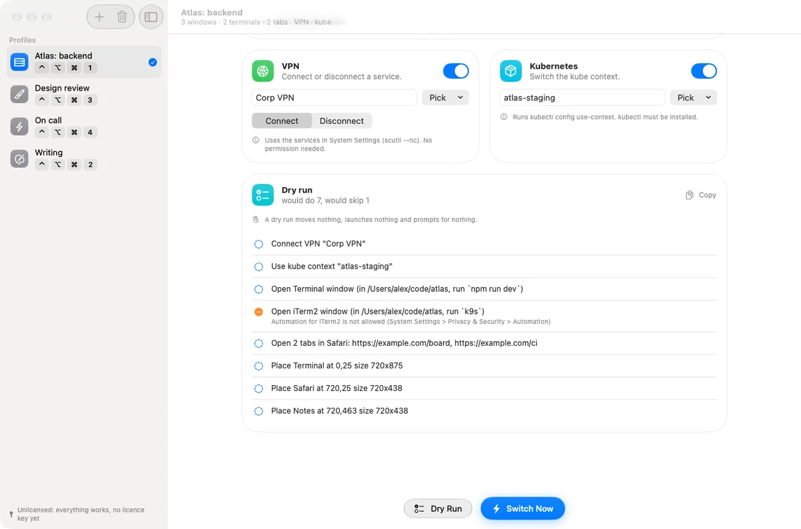
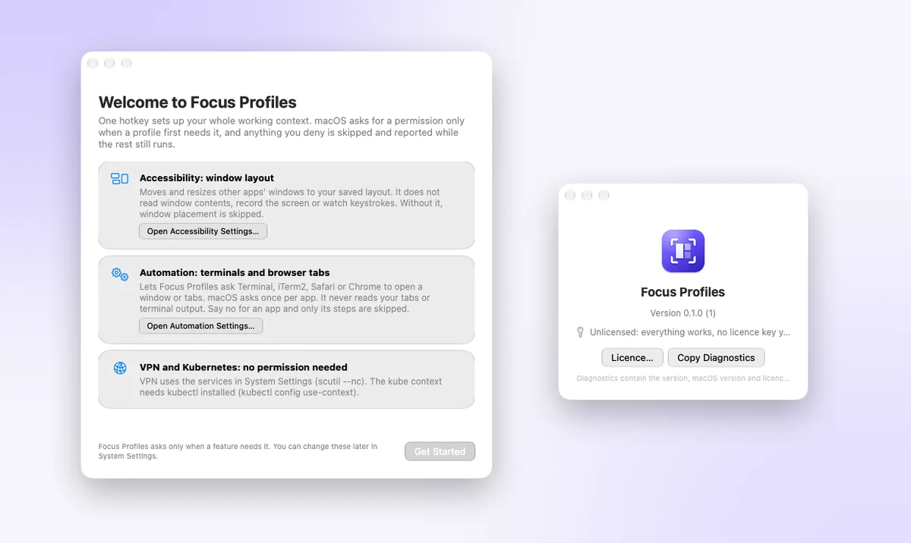

Zyvor · menu bar
Focus Profiles
One hotkey. Your whole working setup.
A per-project profile switcher for macOS. Press a hotkey and your window layout, Terminal or iTerm2 windows, Safari or Chrome tabs, VPN and kube context switch to the project you are working on. Profiles are plain JSON files, and a dry run shows what would happen before anything moves.
Download the 30-day trialLearn more
macOS 27 or later · notarized · Free 30-day trial key: sales@zyvor.dev

Switch projects, not windows.
Each profile is a saved setup for one project. One hotkey applies it, and a step that cannot run is skipped and reported while the rest carries on.
Features
Window layout
Every window, exactly where it belongs.
Place each app's window as a fraction of the main display's usable area. Pick a preset such as left half, right third or one of the four quarters, or capture the frontmost window as you arranged it. It uses the Accessibility API.
Profiles reference
Terminals, tabs, VPN, kube
The rest of your setup, in one step.
Open Terminal or iTerm2 windows in a folder and run a command, open Safari or Chrome tabs, connect or disconnect a VPN service from System Settings, and switch your kube context. Only http and https URLs are opened, and terminal commands are typed exactly as written.

Dry run
See it before it happens.
A dry run lists every step and anything that would be skipped. It moves nothing, launches nothing and prompts for nothing. The same text is printed by FocusProfiles --dry-run in a terminal.
Dry run guide
Permissions
Two permissions, explained first.
Accessibility moves windows. Automation lets Terminal, iTerm2, Safari or Chrome open a window or tabs. Nothing is requested up front: macOS asks when a profile first needs one, and if you say no, that step is skipped and the rest still runs.
Permissions explained
Small things that add up.
One hotkey per profile
Give each profile its own global hotkey, or switch from the menu bar.
Plain JSON profiles
One file per profile in Application Support. Edit in the app or by hand.
Capture a window
Arrange a window, press Capture Frontmost Window, and its position is saved as a rectangle.
Keyboard first
Command-N new profile, Command-R dry run, Command-Return switch. Controls carry accessibility labels.
Careful by default.
Skips, never blocks
A step without its permission is skipped and reported. The rest of the profile still runs.
Only http and https
Other URL schemes are ignored and named in the result.
Typed as written
Terminal commands are typed into a new window exactly as written. Keep only commands you trust in a profile.
Specs and requirements.
- Requires
- macOS 27 or later
- Build
- Signed and notarizedDeveloper ID signed and notarized by Apple, so it opens without a Gatekeeper prompt.
- Version
- 0.1.0Free 30-day trial key: sales@zyvor.dev
- Profiles
- Plain JSONOne file per profile in ~/Library/Application Support/Focus Profiles/Profiles/.
- Apps it can open
- Terminal, iTerm2, Safari, Google ChromeWindow layout works with any app that has a window.
- Entitlements
- Apple events onlycom.apple.security.automation.apple-events and nothing else.
Honest limits
Version 0.1.0 is a first release. Real window moves and the macOS permission prompts were not exercised on a live desktop before release; planning, dry runs, permission skipping, the safety rules and licence checks are covered by the app's self-tests. Window rectangles are fractions of the main display only. Every screenshot on this page is a render of the app's own views with sample data, not a capture of a live session.
Get started in three steps.
Download
Get
FocusProfiles-0.1.0.dmgfrom the release page. The SHA-256 is in the release notes and inFocusProfiles-0.1.0.dmg.sha256.Install
Open the DMG and drag FocusProfiles to Applications. It requires macOS 27 or later and lives in the menu bar.
Add a profile, optionally a key
Choose Edit Profiles… from the menu bar item. The app works without a key. For a free 30-day trial key write to sales@zyvor.dev and paste it under Licence….
Focus Profiles 0.1.0 for Mac · SHA-256
594172b49ae3966e71466a79f82230fadcf1a30d4fb3a34eede5a440e0c6b919Verify: echo "594172b49ae3966e71466a79f82230fadcf1a30d4fb3a34eede5a440e0c6b919 FocusProfiles-0.1.0.dmg" | shasum -a 256 -c
Trial and licence.
Focus Profiles is a paid app with a 30-day trial, and it never disables a feature. Without a key everything works and the menu shows an Unlicensed status line. For a free 30-day trial key, or to buy a licence, write to sales@zyvor.dev. Prices are not published yet.
How the trial and the status line work · Zyvor Production License v1.0
Questions, answered.
Does it work without a licence key?
Yes. Everything works, and the menu and Licence window show a status line that says it is unlicensed. For a free 30-day trial key write to sales@zyvor.dev.
What does it cost?
Prices are not published yet. Write to sales@zyvor.dev.
Which permissions does it need?
Accessibility, to move and resize windows, and Automation, to have Terminal, iTerm2, Safari or Google Chrome open windows and tabs. Neither is requested up front. If you deny one, only the affected steps are skipped.
Can I preview a switch?
Yes. A dry run lists what would happen and what would be skipped, and it moves nothing, launches nothing and prompts for nothing. Use the Dry Run button or FocusProfiles --dry-run in a terminal.
Is it safe to put commands in a profile?
A command is typed into a new terminal window exactly as written, so it runs with your own rights. Only keep commands you trust in a profile.
Which URLs does it open?
Only http and https URLs. Anything else is ignored and named in the result.
Where are my profiles?
In ~/Library/Application Support/Focus Profiles/Profiles/, one JSON file each. Set FOCUS_PROFILES_DIR to use another folder.
Which macOS versions?
macOS 27 or later.
Are the screenshots real?
They are renders of the app's own views with sample data, produced by the app itself. They are not captures of a live session. The dry-run text in the docs is real output.
Will macOS warn me when I open it?
No. The download is Developer ID signed and notarized by Apple, so it opens without a Gatekeeper prompt. The SHA-256 is on the release page if you want to verify it.